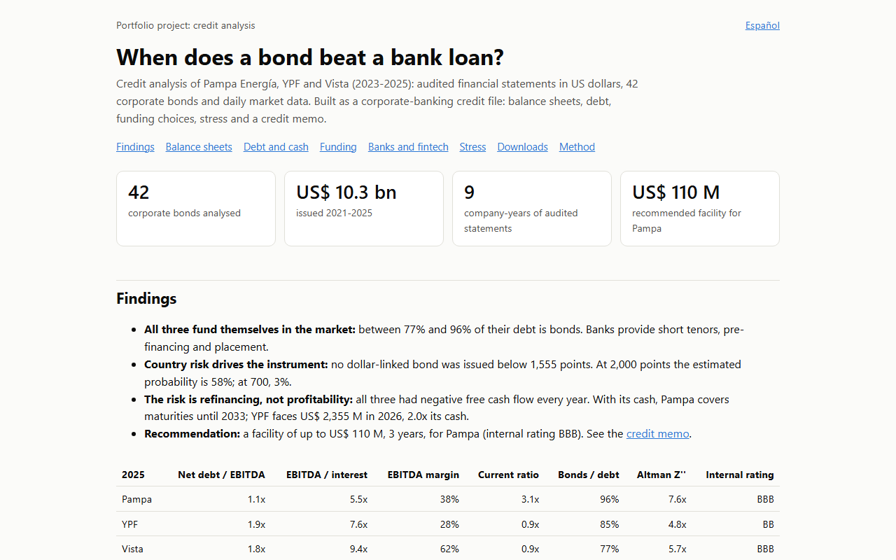

Corporate credit analysis: bonds or bank loans?
Credit memo recommending a US$110M facility for Pampa Energía (internal rating BBB).
Credit file on Pampa, YPF and Vista from audited 2023–2025 statements: ratios, maturity wall, stress test, covenant headroom, and when issuers choose bonds over bank debt.